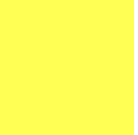
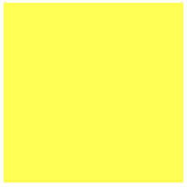
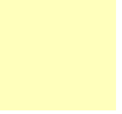
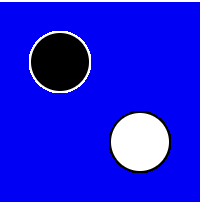
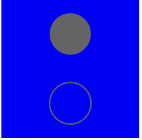
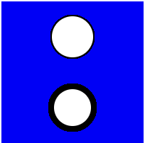
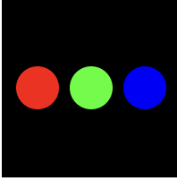

Exercises: Canvas and Color
1.1 Basic Canvas
This section contains some exercises to get more familiar with the definition of the canvas 🖼.
1.1.1 Canvas
Create a yellow canvas with a height and width of 100 pixels. To create yellow, the red channel and blue channel must both be on.
Expected Output:

1.1.2 Changing shades
Similarly to how you defined the canvas in exerise 1.1.1, create a canvas and background. However now change the transparency of the background to 100. The transparency here refers to the alpha channel.
Note: the range of shade is between 0 - 255.
Expected Output:

Wait! ✋🏽🙈 why is the background solid? 🤔
Remember that the draw function is called multiple times. Therefore, the background ends up with several yellow layers. Instead, we want a yellow canvas with transparency, so let's define the background within the body of the setup function to see what happens (this is called just once when the program starts).
1.1.3 Changing shades 2
Take the canvas you defined in the previous step and now change the shade for the background within the setup function.
Expected Output:

2.1 Stroke and Fill
2.1.1 Stroke and Fill
Create two circles, one circle with a black stroke and a white fill at position (30, 30), and another circle with a white stroke and a black fill at position (70, 70), the circles both have radius 30.
Note: the default stroke colour is black (0) and the default fill colour is white (255)
Expected Output:

2.1.2 noStroke() and noFill()
Draw two circles one at position (50, 25) and another at position (50, 75) both with radius 30, one has a grey fill but no stroke, while the other circle has a grey stroke but no fill
Expected Output:

2.1.3 Stroke Weight
Draw two circles one at position (50, 25) and another at position (50, 75) both with radius 30, one has a stroke weight of 1, and the other has a stroke weight of 4
Expected Output:

2.2 Colour
This section contains some exercises to practice with using and defining colors 🌈 using P5*js.
2.2.1 Colour-Fill
Draw three circles, one at position (20, 50) and is coloured red, another one is at position (50, 50) and is green and the last one is at position (80, 50) and is blue. All circles have a radius of 25.
Expected Output:

2.2.2 Colour-Stroke
Draw three circles, all of them have a while fill and radius 25. One is at position (20, 50) and has stroke coloured red, another one is at position (50, 50) and has stroke coloured green and the last one is at position (80, 50) and has stroke coloured blue
Expected Output:

2.2.3 Alpha
Draw three black circles of radius 25, one is at position (20, 50) has an alpha value of 40, another one is at position (50, 50) and has an alpha value of 140, and another one is at position (80, 50) and has an alpha value of 255.
Do not forget that the background should be added to the draw() function.
Expected Output: